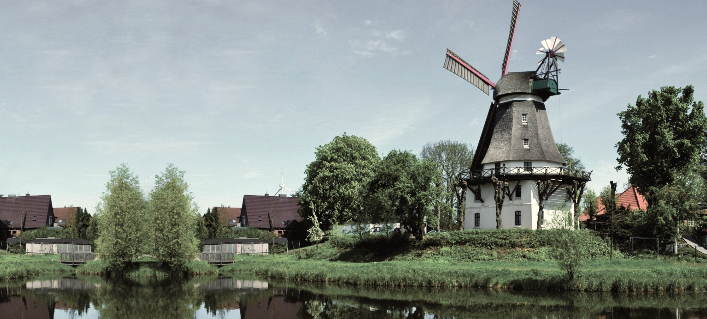
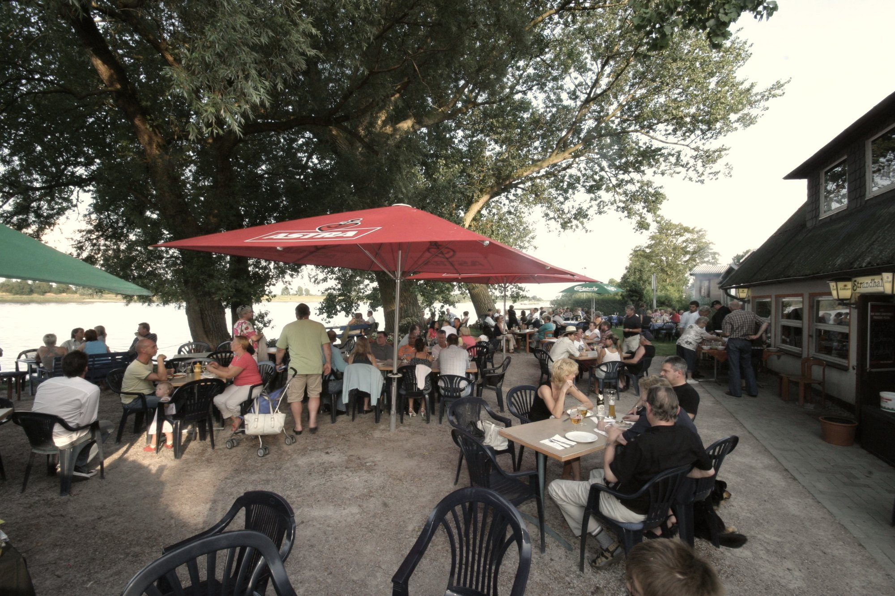

Der Ort.
Die Mühle am Teich
Nordheide
Hier steht der Vorspann. Zwei, drei Sätze, die in die Geschichte ziehen.
Blindtext. Der echte Text folgt.
Eviva Hittfeld! Wem der Sinn nach spanischen Tapas steht, muss nicht mehr in die Ferne schweifen: Seit Julia Kissmann, Gastronomin aus Leidenschaft, gemeinsam mit dem erfahrenen Barkeeper Marco Elsner 2011 in einem alten Fachwerkhaus im Herzen von Hittfeld das „BARrica“ eröffnet hat, können Gäste dort köstliche Drinks und original spanische Tapas wie „Porcion Pata Negra“, „Pimientos del Padron“ oder „Pollo al ajillo“ genießen. Damit die Auswahl leichter fällt, sind alle Gerichte in der Karte mit Foto abgebildet.
Julia Kissmann, die gleichzeitig auch das Restaurant „Rossini“ direkt gegenüber leitet, hat bei der Einrichtung des „BARrica“ viel Liebe zum Detail walten lassen: Im Sommer wird die große Außenterrasse zum Hittfelder Hot Spot, im Winter laden urige Tische mit Eichenholzplatten und gemütliches Kerzenlicht im Inneren des Fachwerkhauses zum Verweilen ein.
Nach dem Dinner kann man den Abend bei Marco Elsner an der Bar mit internationalen Cocktails und köstlichen Weinen ausklingen lassen, wo eine imposante vier Meter große Granitplatte die Wand verziert. Auf Nachfrage werden gern komplette Tapas-Platten für jede Gästeanzahl zusammengestellt.
Unser Tipp: Unbedingt auch die internationalen Tapas-Kreationen des Hauses probieren, zum Beispiel das kleine Rinderfilet auf Zuckerschoten mit Teriyakisoße oder Currywurst-Tapas!

Nächste Story, Aus Liebe.